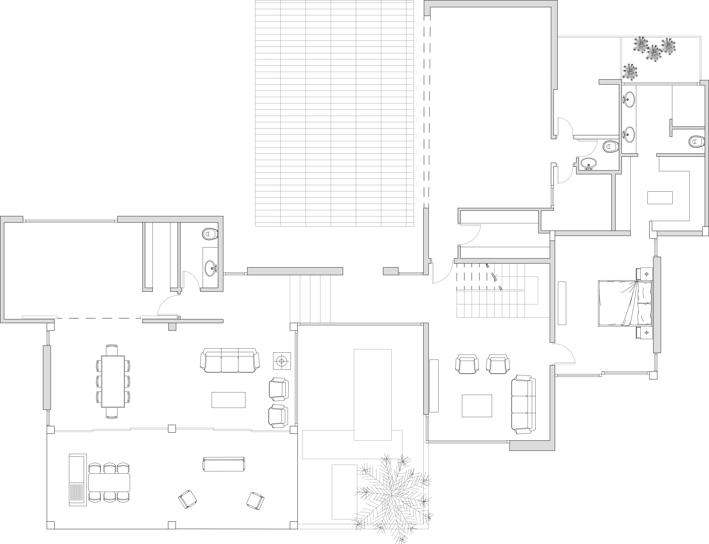
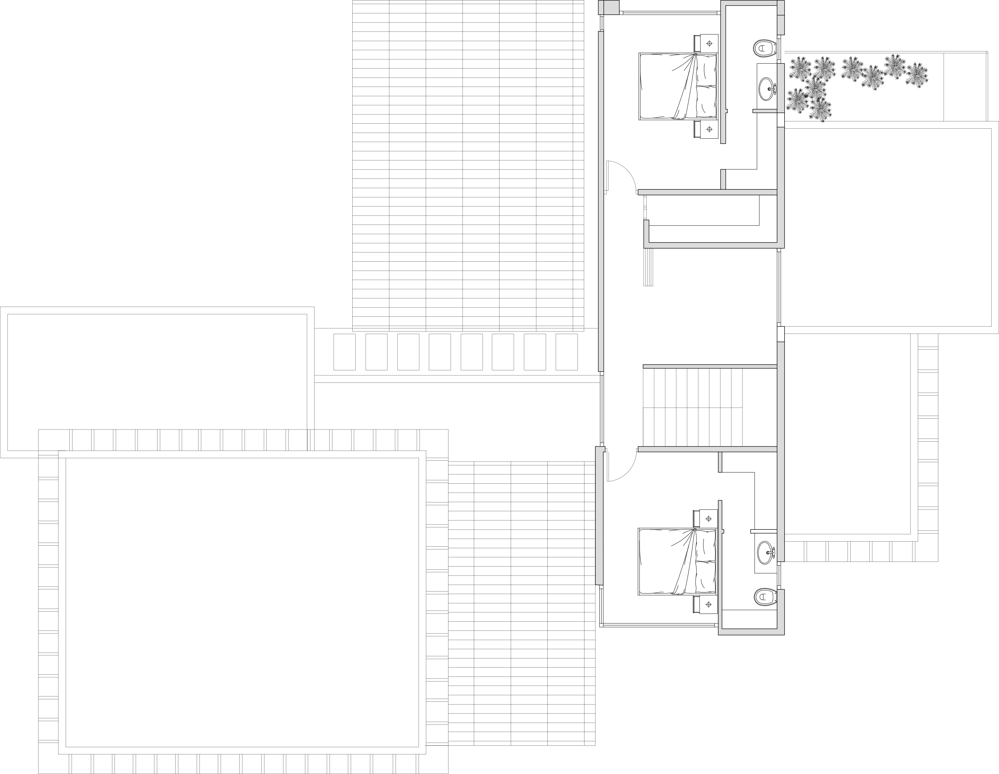
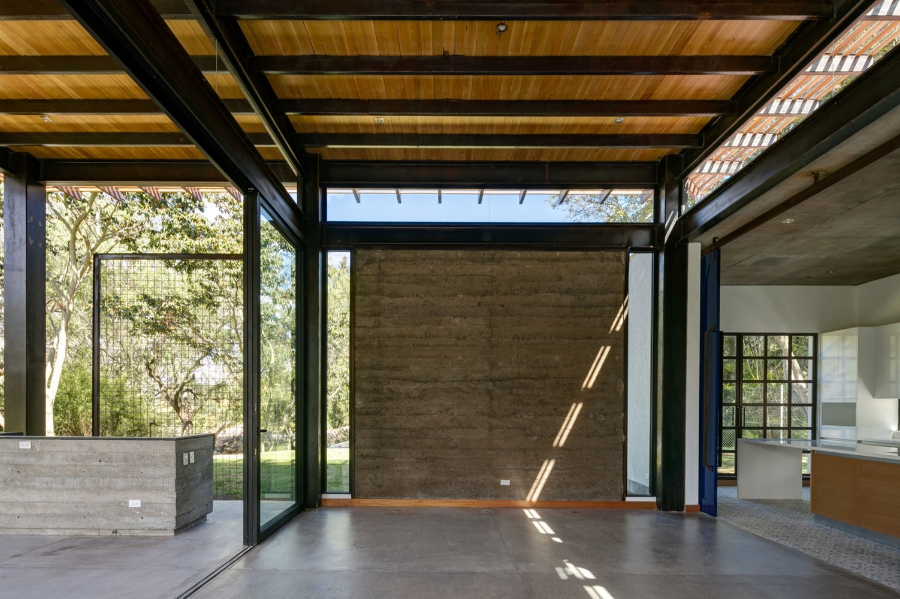

La casa GC si trova nelle valli circostanti di Quito, in Ecuador. La casa è stata appositamente progettata e orientata nord-sud, aprendosi verso il lato meridionale, proteggendo dal sole sui suoi lati orientali e occidentali, perché il sole è particolarmente forte in quanto il sito si trova in alta quota e si trova vicino all'equatore. La facciata nord è molto solida in quanto il quartiere circostante non ha recinzioni. Al contrario, la facciata sud è molto aperta, incorporando la casa con il suo prato.
A causa della grande estensione del lotto, la maggior parte degli spazi si trova al piano terra. Solo due camere da letto al secondo piano. La casa è divisa in due aree principali. Una parte più intima, dove si trovano le camere da letto e i bagni, e una zona meno privata, dove si trovano il salotto, la cucina e la sala da pranzo. Questi due sono collegati dall'ingresso principale che diventa un ponte tra tutti gli spazi abitativi. Infine, un cortile centrale diventa il punto centrale della casa.
 I materiali utilizzati sono per lo più esposti allo stato naturale, come i pavimenti in cemento lucido. Gli spazi più importanti della casa, come le principali zone soggiorno e pranzo, e la camera da letto principale, sono costruiti con strutture metalliche a vista, legno di eucalipto nel soffitto, che è ricoperto da uno strato di cemento. Ci sono tre pareti di adobe esposte negli spazi principali, muri che ci ricordano la tradizionale architettura dell'Ecuador.
